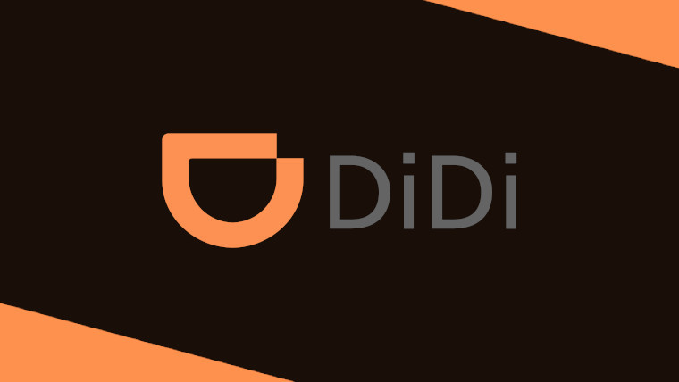
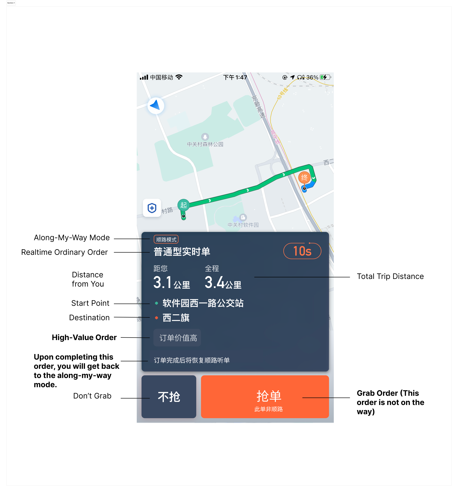
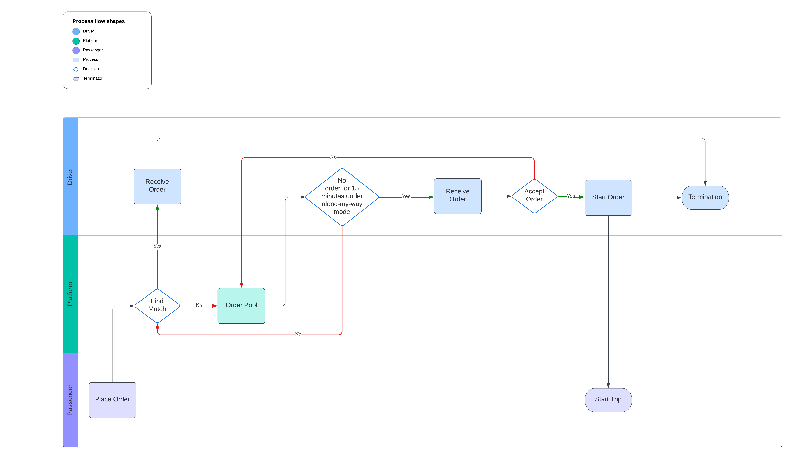

DiDi: Along-My-Way Trading Strategy Iteration
Project Overview
At DiDi, I was responsible for managing the product that matches drivers in the transaction loop. The essence of the transaction is that the platform provides a trading venue and uses certain means to adjust the mismatch of supply and demand, thereby completing the order. Although DiDi involves two stakeholders, drivers and passengers, it is essentially demand-driven. Therefore, at this time, the regulation of supply (drivers) will directly affect the platform’s order completion volume. I facilitated drivers to meet passenger demand through time, space, and willingness adjustments, making it easier for passengers to get a ride quickly.
Time Adjustment
This refers to the traction of drivers in the driving time period to solve the mismatch of supply and demand. For example, encourage drivers to take more orders during the morning and evening peak hours at the same location. In this traction method, I mainly participated in the iteration of a new transaction mode on the driver side, named semi-assignment of ordinary orders under the along-my-way mode.
Along-My-Way Mode
The along-may-way function is an important function on the driver side. When the driver goes out for errands or goes home, he can only listen to the along-my-way orders when he turns on this function. Drivers who turn on this function during peak hours account for about 11% of the overall capacity, but in fact, this function shields drivers from non-along-my-way orders, which is a loss of peak capacity for the overall market; secondly, many drivers are facing the situation of not being able to hear orders under the along-my-way mode, which will affect the driver’s order listening experience and income.
Solution: Semi-Assignment of Ordinaty Orders
Therefore, our solution is to use the drivers who turn on the along-my-way mode as temporary supplementary capacity during peak hours to alleviate the problem of time mismatch during peak hours and improve the driver’s order listening experience. In terms of strategy, for the MVP version, we first collect high-value orders that are unlikely to be answered by the passenger side in a short time and gather them into the order pool; secondly, the algorithm team will distinguish whether the driver is the first order in a period of time and set different order broadcasting times for the driver. When the driver waits for the order in place for a long time, we will distribute the ordinary orders in the order pool to the driver in the form of a semi-assignment card, and explain that this order is not along the way, and the driver can choose to take it or not. After the driver completes the order, the along-my-way mode will be automatically restored and listen to the along-my-way order.
 Results
This product solution had a phase of experimental results when I left, and the actual results brought about 0.3-0.4% of the overall GMV growth to the platform.
DiDi: Spatial Regulation for Driver Dispatch
Project Overview
Spatial regulation refers to the process of managing supply-demand mismatches by directing drivers to areas with high demand, such as commercial districts and office buildings.
Role and Responsibility
As the Product Manager in this project, I was involved in optimizing the core dispatch function on the driver’s side. Our team, consisting of 30 members from strategy, engineering, and operations, held weekly meetings to identify and redefine problems.
Phase 1: Understanding the Potential of Dispatch
In the initial phase, we wanted to understand the upper limit of the benefits of dispatch as a tool. Our algorithm team calculated the transaction rate and the proportion of orders for cities nationwide. According to their results, I found that when the driver’s acceptance rate for dispatch reached a minimum of 50%, some cities had the potential to achieve a 100% response rate. However, the current average dispatch acceptance rate was only around 30%, indicating a gap that needed to be addressed.
Experiment Design
To explore this, I designed an experiment to increase the dispatch acceptance rate by offering higher subsidies to drivers. The aim was to understand the potential benefits of dispatch and to identify the direction of optimization for the dispatch project.
Phase 2: Problem Identification and Solution
The experiment did not yield the expected results, with no significant increase in GMV for the platform. Not only our exploratory experiment, but also the dispatch project itself did not yield satisfactory results recently.
Upon identifying this issue, I collaborated with the team to dissect the problem. We first worked with the algorithm team to roll back the strategy to a stage where there was a significant GMV benefit. We then analyzed the historical benefit scenarios, which were mainly during the periods before and after peak hours in the morning and evening, and at night, rather than during the peak hours themselves as we had assumed.
Based on these findings, we redefined the effective use scenarios for dispatch as a supply-demand regulation tool. We also started monitoring every funnel link in the dispatch process, and plan to carry out more detailed optimization in the future.
Results
We estimate that the dispatch project can bring a 0.5% GMV benefit to the platform annually.
Lizhi: Intimacy Value Feature
Project Overview
During my time at Lizhi, I was responsible for the PP Yuewan project. PP Yuewan held a significant position within the Lizhi Group, serving as a major source of revenue. As the sole revenue product manager for PP Yuewan, I bore a significant responsibility.
Problem Identification
Before I joined PP Yuewan, the app, being an online voice chat room software, had a rather shady monetization strategy. The top 5% of players accounted for 98% of the consumption on the software, which was primarily spent on probability gameplay, essentially a form of disguised online gambling. This posed several problems. Firstly, with tightening policies, gaining revenue through this method was unsustainable. If compliance issues arose one day, removing the probability gameplay could cause a significant shakeup in revenue. Secondly, the value proposition for users was unclear. If users were playing these games instead of using the chat room functions, it indicated that the product’s value proposition was not well communicated.
Strategy Transformation
Given this background, as the revenue product manager, my task was to transform the monetization strategy from online gambling to something that aligns with the product’s mission and can bring sustainable revenue growth to the company.
Data Analysis and User Research
I started by analyzing data and conducting user research. I found that the 7-day retention rate and the 7-day revenue data were important indicators of long-term user retention. Moreover, if we could recoup the revenue within 7 days, the marketing side would have more budget to acquire new users. This insight guided my approach to transforming the monetization strategy of PP Yuewan.
Product Design
Despite being a relationship-oriented entertainment platform, there was no place on our platform where this relationship could be visually represented. Therefore, I designed the “Intimacy Value” feature. On the surface, it is a growth system for the intimate relationship between the companion and the user. In reality, it provides a tool for visualizing relationships on the platform, allowing both parties to see the progress of their relationship, thereby motivating them to continue their long-term exchange and companionship.
In this relationship, the concept of “gifts” can concretize the relationship. From an anthropological perspective, gifts are tokens of exchange. On one hand, players express their approval of the companion’s service by giving gifts. On the other hand, receiving gifts motivates companions to provide better services to players.
Stakeholder Alignment and Feature Development
After finalizing this product plan, I aligned with my stakeholders. Subsequently, I designed a detailed mechanism for the “Intimacy Value” feature, including the trigger system, accumulation conditions, tiered levels, and rewards for intimacy values. After designing the complete process for the Intimacy Value mechanism, I collaborated with colleagues from different departments, such as software engineers, UX designers, and marketing, among other stakeholders, and entered the product development cycle. I managed the entire product development process.
Results
The product feature release enhanced new users' 7-day revenue by 34.08% and boosted user retention rate by 57.33%.